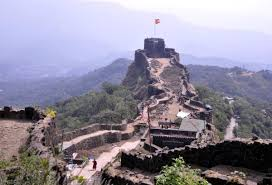

Introduction
The Marathas rose from guerrilla warriors to establish a confederacy that dominated 18th-century India.
Raigad Fort, capital of Chhatrapati Shivaji Maharaj
Military Genius
Shivaji's innovative tactics and navy challenged Mughal supremacy.
Administration
The Ashtapradhan council and revenue systems were models of efficiency.